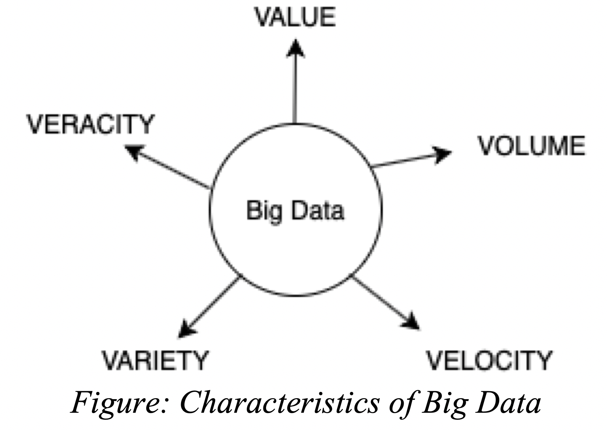

Big Data for Energy Efficiency
Authors: Miracle C. Nkemdirim & Ekene A. Okonkwo
Faculty of Electrical Engineering, University of Ottawa, ON K1N 6Y7, Canada
Introduction
Data management, as well as data generation has peaked radically over the past few years. Data management is especially important because raw data is nothing until meaningful information that can be used to make different decisions is extracted from this raw data. In the world today, the building and construction sector is one of the main energy consumers as this sector accounts for about 36% of global energy use and one-third of global greenhouse gas emissions. For this reason, maintaining energy efficiency in buildings has become a top priority for sustainable societies and researches in building science [1].
Understanding and Use of Big Data for Energy Efficiency
The term, big data, is used to describe datasets that are large (such as terabytes, petabytes, exabyte), it is difficult or typically impossible to use average software tools or methods to analyze them effectively [2]. Today, big data has become a phenomenon that gears toward providing a solution for datasets based on data analysis that is different from the conventional solutions. The concept of big data is explained through the 3V method that was introduced by Laney in 2001. Laney defined big data as: “high volume, high velocity, high-variety information assets that demand cost effective, innovative forms of information processing for enhanced insight and decision making”. Laney’s definition refers to the three main features (3V) of big data which are Volume, Variety, and Velocity which data practitioners have extended to 4V and even 5V by including (Value and Veracity).
1. Volume:
This feature refers to large datasets of any kind obtained from various sources including business transactions, industrial equipment, smart IoT devices, and digital devices. In the energy and engineering, the formation of smart devices such as sensors, RFID tags, smart meters, etc. leads to the creation of an enormous amount of data. According to scientists, the amount of data obtained in terms of electricity consumption by 1 million smart meters in a distribution network every 15 minutes within a year totals up to 2920 terabytes. This is a large amount of data and poses not only a problem with storage but also a problem with trying to extract meaningful information from all that data. [1]
2. Velocity:
This feature refers to the speed at which data is transferred. With the growth of IoT, an enormous amount of data is flooded into the energy big data collection at an unparalleled rate. In order to support this influx of data and the speed at which data is streamed, the speed of data collection, processing, and data analysis ranges from a sub-second to a five or fifteen-minute interval. [1]
3. Variety:
This feature refers to the variety of data sources from which data can be streamed or extracted. These sources range from videos, images, sensors, smart meters, smartphones and so on. Also, data can come in a structured form or unstructured form. In big data for energy efficiency specifically, data can be structured, semi-structured and unstructured. When we say data is structured, we mean this data is obtained from relational databases such as energy consumption data or solar cell light intensity data. For semi-structured data, a good example would be data exchanged between smart energy platforms and a third party aggregator using HTML, XML. Unstructured data can be in the form of interactions of consumers on social media about their energy use, ads, flyers or promoted emails on energy use. [1]
4. Value:
We have talked about the volume, speed and even the variety of data being extracted but unless this data streamed can be turned into value, it is useless. This makes this feature the most important of any big data application as it gives room for obtaining useful information from accumulated data. Understanding and generating value from energy big data is important as it helps in decision making processes and it also helps service providers to better understand the energy consumptions patterns of customer and thus provide a more efficient and sustainable strategy for these consumers. [1]
5. Veracity:
This feature refers to the quality of the data streamed. A variety of sources, a lot of which are untrustworthy, are responsible for the generation of data so verifying the reliability and accuracy of the data content is important. Sometimes, the devices that keep track of these data, ‘drift’ off course or lose track for as little as a second but this small imbalance can lead to inaccuracy of the entire dataset. Because of situations like this, it is important to not just assume that all data is accurate but try to make sure the necessary devices and methods are used to confirm the accuracy of datasets. [3] Big data and the way organizations derive inspiration from it has become a game changer in the world today. It is a great deal for industries and energy sectors as the increase and growth of IoT has created a massive boost in the amount of data that can be collected. This makes knowledge and application of big data a good step to unlocking interesting and promising insights for every industry and sector. [2]
Bibliography
[1] N. Koseleva and G. Ropaite, "Big Data in Building Energy Efficiency: Understanding of Big Data and Main Challenges," Elsevier, 21 02 2017. [Online]. [Accessed 28 12 2019].
[2] "Big Data: What it is and why it matters," [Online]. Available: https://www.sas.com/en_ca/insights/big-data/what-is-big-data.html. [Accessed 28 12 2019].
[3] J. Cano, "The V's of Big Data: Velocity, Volume, Value, Variety, and Veracity," [Online]. Available: https://www.xsnet.com/blog/bid/205405/the-v-s-of-big-data-velocity-volume-value-variety-and-veracity. [Accessed 28 12 2019].